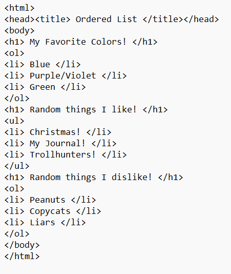

.~Lessons for the 1st Quarter~.
*Lesson 1 - XHTML*
-> XHTML stands for eXtensible HyperText Markup Language.
-> It is stricter and a cleaner version of HTML.
-> EXAMPLE CODE AND OUTPUT:

*Lesson 2 - Lists*
-> HTML Lists specify lists of information.
-> The three different types of HTML lists are Ordered/Numbered List (ol), Unordered/Bulleted List (ul) and Description/Definition/Glossary List (dl).
-> EXAMPLE CODE AND OUTPUT:

*Lesson 3-4 - Tables*
-> Tables allow you to organize and arrange data into columns and rows. It allows you to divide your page into sections where you can place headers, footers and navigation links.
-> EXAMPLE CODES AND OUTPUTS:


*Lesson 5 - Hyperlinks*
-> Hyperlinks is a reference link that allows you to navigate to another page of the same document or to another document.
-> Examples of hyperlinks are External links, Internal links and dead links.
-> EXAMPLE CODE AND OUTPUT:

*Lesson 6-8 - Forms*
-> Forms allow you to gather feedback from your readers or visitors and work on the data to provide better service.
-> Users can key in information in forms using textboxes, password boxes, radio buttons, check boxes, dropdown menus, text areas, submit buttons and reset/clear buttons.
-> EXAMPLE CODE AND OUTPUT:

Click here to return to the Home Page!